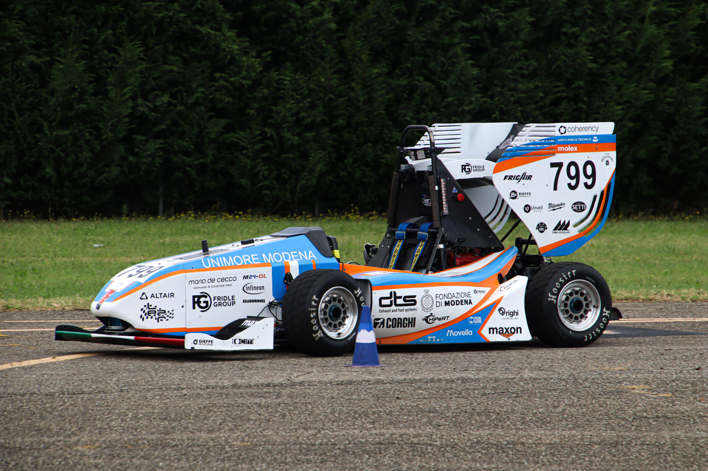

Hermes wasn't designed in a vacuum. Its autonomous core was forged alongside MMR – MoRe Modena Racing, the UNIMORE Formula SAE driverless team. The technology proven at racing speed now moves medication safely through hospital corridors.

Olympus builds its technological path side by side with MMR – MoRe Modena Racing, developing autonomous vehicles and advanced environmental-perception systems within the Formula SAE driverless project.
The first autonomous logistics robots are built thanks to this partnership, progressively refining performance, reliability and safety by transferring automotive know-how to industrial use.
The platform matures across complex logistics environments — collecting data on track and in the field, and validating the same perception stack at scale.
MMR remains a strategic partner. The know-how developed on the circuits and in the labs lives on inside Hermes, becoming a key element of the innovation we bring to hospitals.
Discover how the Hermes ecosystem brings autonomous logistics to your facility — pricing tailored to your needs.